Welcome
People use GitHub to build some of the most advanced technologies in the world. Whether you're visualizing data or building a new game, there's a whole community and set of tools on GitHub that can help you do it even better.
What You'll Learn
- Who is this for: New developers, new GitHub users, and students
- What you'll learn: Repositories, branches, commits, and pull requests
- What you'll build: A profile README for your GitHub profile
- Prerequisites: None. This course is a great introduction for your first day on GitHub
- How long: Less than one hour to complete
Course Steps
- Create a branch
- Commit a file
- Open a pull request
- Merge your pull request
Step 1: Create a Branch
What is GitHub?
GitHub is a collaboration platform that uses Git for versioning. GitHub is a popular place to share and contribute to open-source software.
What is a repository?
A repository is a project containing files and folders. A repository tracks versions of files and folders.
What is a branch?
A branch is a parallel version of your repository. By default, your repository has one branch named main and it is considered to be the definitive branch. Creating additional branches allows you to copy the main branch and safely make changes without disrupting the main project.
What is a profile README?
A profile README is essentially an "About me" section on your GitHub profile where you can share information about yourself with the community on GitHub.com.
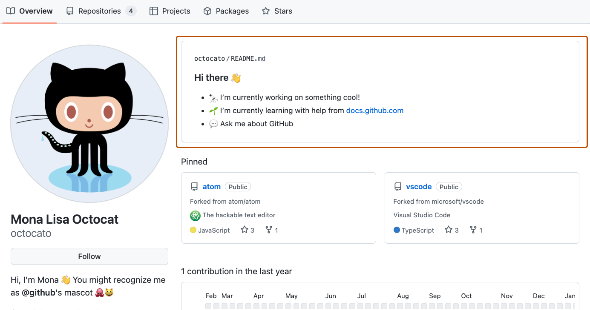
⌨️ Activity: Your first branch
- Navigate to the < > Code tab in your repository
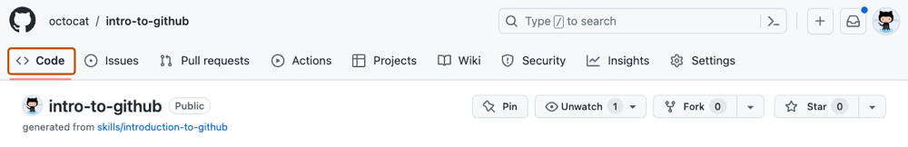
- Click on the main branch drop-down
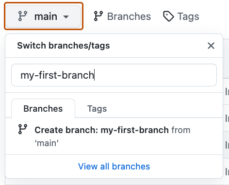
- In the field, name your branch
my-first-branch - Click Create branch: my-first-branch
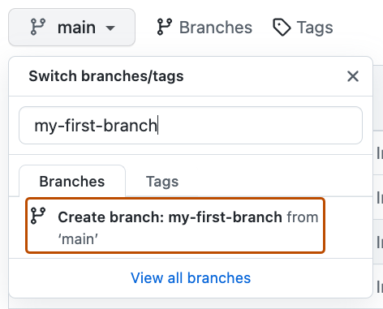
- Wait about 20 seconds then refresh your repository page. GitHub Actions will automatically update to the next step.
Step 2: Commit a File
What is a commit?
A commit is a set of changes to the files and folders in your project. A commit exists in a branch.
Note: .md is a file extension that creates a Markdown file. You can learn more about Markdown by visiting Basic writing and formatting syntax.
⌨️ Activity: Your first commit
- Make sure you're on your new branch
my-first-branch - Select the Add file drop-down and click Create new file
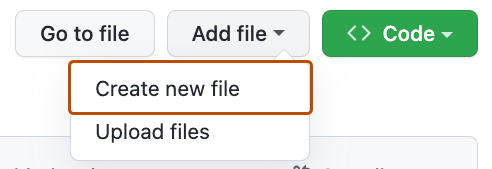
- In the Name your file... field, enter
PROFILE.md - In the file contents area, copy the following:
Welcome to my GitHub profile!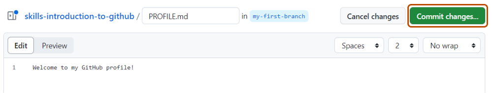
- Click Commit changes... in the upper right corner
- Enter
Add PROFILE.mdas the commit message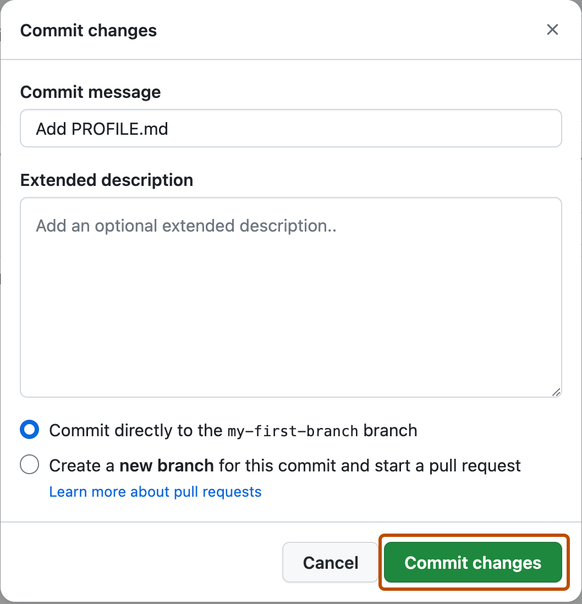
- Click Commit changes
- Wait about 20 seconds then refresh. GitHub Actions will automatically update to the next step.
Step 3: Open a Pull Request
What is a pull request?
Collaboration happens on a pull request. The pull request shows the changes in your branch to other people and allows people to accept, reject, or suggest additional changes to your branch.
⌨️ Activity: Create a pull request
You may have noticed after your commit that a message displayed indicating your recent push to your branch with a Compare & pull request button.
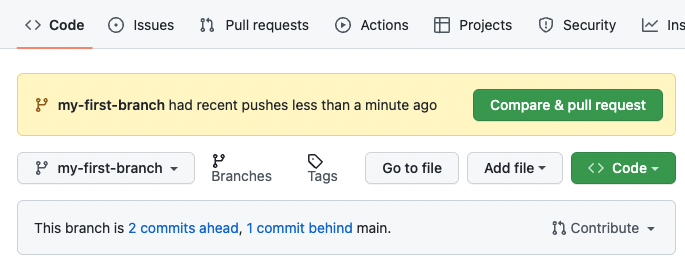
- Click on the Pull requests tab in your repository
- Click New pull request
- In the base: dropdown, make sure main is selected
- Select the compare: dropdown, and click
my-first-branch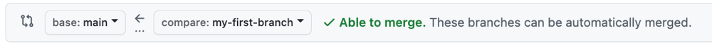
- Click Create pull request
- Enter a title:
Add my first file - Add a description of your changes
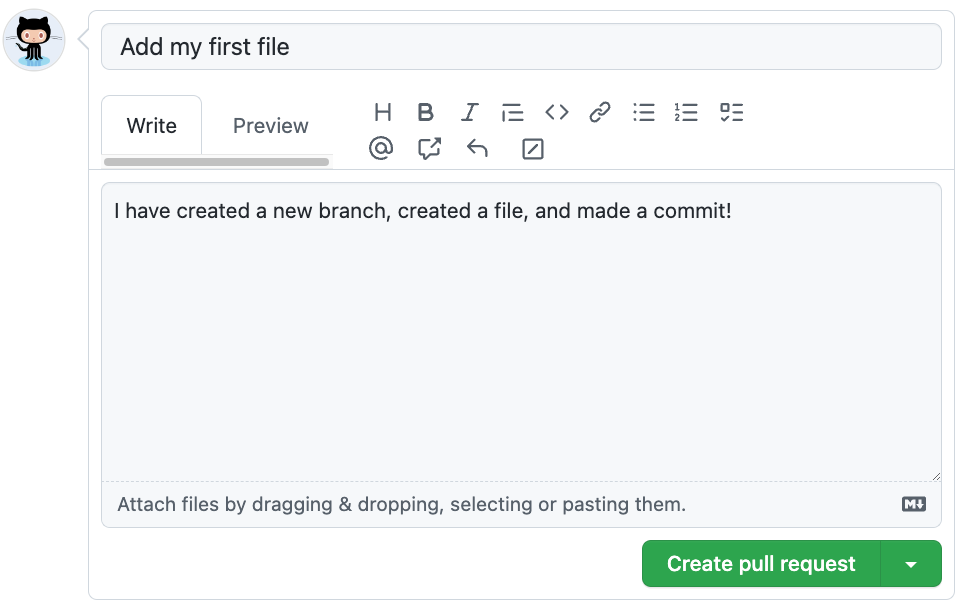
- Click Create pull request
- Wait about 20 seconds then refresh. GitHub Actions will automatically update to the next step.
Note: You may see evidence of GitHub Actions running on your pull request!
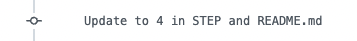
Step 4: Merge Your Pull Request
What is a merge?
A merge adds the changes in your pull request and branch into the main branch.
You'll have to wait for GitHub Actions to finish before you can merge your pull request. It will be ready when the merge pull request button is green.
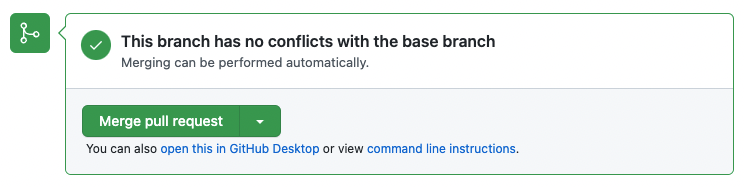
⌨️ Activity: Merge the pull request
- Click Merge pull request
- Click Confirm merge
- Once merged, click Delete branch
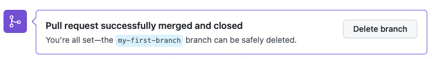
- Wait about 20 seconds then refresh. GitHub Actions will automatically update to the next step.
Note: Check out the Finish step to see what you can learn next!
🎉 Finish
Here's a recap of your accomplishments:
- ✅ You learned about GitHub, repositories, branches, commits, and pull requests
- ✅ You created a branch, a commit, and a pull request
- ✅ You merged a pull request
- ✅ You made your first contribution!
What's next?
Make a Profile README
- Make a new public repository with a name that matches your GitHub username
- Create a file named
README.mdin its root - Edit the contents of the
README.mdfile - If you created a new branch, open and merge a pull request
- Share your thoughts in the discussion board